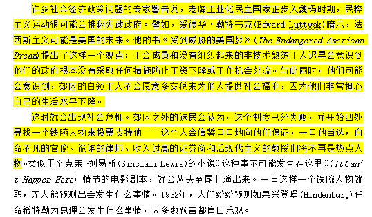
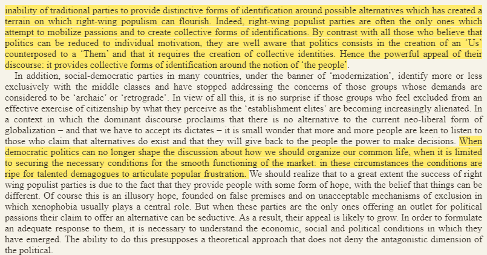
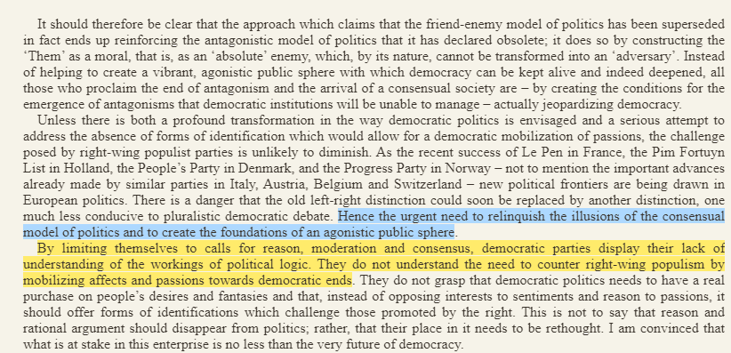

@OblivionSnows 這屆人民不行.jpg
事到如今左翼光譴責民粹主義搞什麼「體面」那肯定是不行的，得師夷長技以制夷。

事到如今左翼光譴責民粹主義搞什麼「體面」那肯定是不行的，得師夷長技以制夷。



1/n 笑死，目田们到现在还只会停留在每天发推咒骂的阶段，总结就是：要不是你们投了川普，这一切都不会发生云云
在此不得不重温 Richard Rorty 在98年《筑就我们的国家》中对美国未来的预警
可以说当左翼政党选择“第三条道路”，觉得对抗性政治已经过时，将民主框定在协商民主的自由主义版本中时，就 https://t.co/i3NOQlyLVq https://t.co/iaSH0NaNT1
在此不得不重温 Richard Rorty 在98年《筑就我们的国家》中对美国未来的预警
可以说当左翼政党选择“第三条道路”，觉得对抗性政治已经过时，将民主框定在协商民主的自由主义版本中时，就 https://t.co/i3NOQlyLVq https://t.co/iaSH0NaNT1